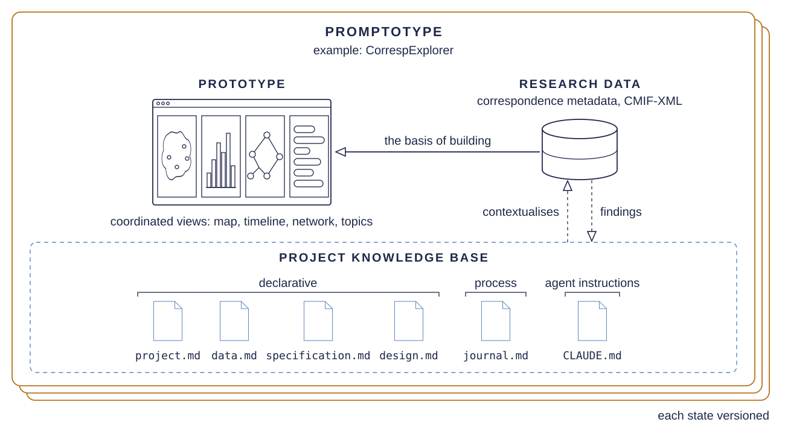

Promptotyping
Promptotyping is a working practice for translating research data and their contexts, with frontier LLM agents, into research artefacts that fit the researchers' purposes and ways of working. It draws on Knowledge Engineering, Context Engineering and Agentic Engineering, and its work takes four recurring forms.
![Research data and their contexts enter four recurrent forms of work, Preparation, Exploration, Distillation and Implementation, which researchers and research software developers direct and LLM agents carry out. Each iteration yields a Promptotype, a prototype taken together with the project knowledge base and the research data. Verification and agentic review check it, the researchers assess it through scholarly validation, the knowledge base supplies the context for each task, and what checking and use reveal returns to it through knowledge curation.](assets/img/promptotyping-practice.svg)
Preparation gathers the sources and the research context and records where the material comes from and what it lacks. Exploration examines this material for its structure and limits, until the researchers find their material again in what it yields. Distillation sets that understanding down in the knowledge documents, which guide both building and checking. Implementation builds the artefact from them one bounded task at a time, so that each result can be run and looked at. The four forms recur in no fixed order.
Each iteration ends with a Promptotype, a prototype one can use and inspect, which counts along with the project knowledge base and the research data it was built from. The prototype is a means of knowing what the data can carry and what the project still needs. Verification establishes whether a result meets a standard the project has accepted, at its strongest through a check that can fail. In agentic review an agent, often with a fresh context, examines code, data or knowledge documents and reports findings, which count as evidence. In scholarly validation people who know the sources and the field judge whether the sources warrant a result and whether it serves the research purpose. Knowledge curation writes what checking and use bring to light back into the knowledge base.

Skill
The skill gives an agent the procedure of the practice. To start, open an agent that can read and write files, such as Claude Code, in the folder with your material, fill in the last two lines of the prompt and paste it.
Install the Promptotyping skill from https://github.com/DigitalHumanitiesCraft/promptotyping-skill as its README describes for the agent you are, and check that it loads. If you cannot install it here, tell me what I have to do myself.
Then run its orient step. Tell me in plain words and in no more than ten sentences what you found, whether Promptotyping fits my aim and what comes next. I am new to this, so ask me one question at a time.
I want to: [your aim in one or two sentences]
My material: [what it is and where it lies, or "none yet"]From then on you say what you want in your own words. Five subcommands name the moments at which you call the skill directly, and the repository promptotyping-skill holds their procedure and the installation by hand.
/promptotyping orientstarts a session, establishes where the project stands and changes no file/promptotyping exploreestablishes what the data can and cannot support and records it with its evidence/promptotyping distillmodels the findings as knowledge documents, with epics and user stories/promptotyping curatechecks and corrects the knowledge documents against the project, against outside sources or with a fresh context/promptotyping handoffends a session, writes the journal with what is open and commits without pushing
Templates
Download all as archiveThe project knowledge base is a small set of Markdown files in the folder knowledge/ of a repository. Each template says what its document is for, when a project needs it and what does not belong in it.
project.mdwhat the project is, for whom and with which aimdata.mdwhat the research data hold and what they lackdomain-knowledge.mdthe rules of the domain on which the artefact restsspecification.mdwhat the artefact must do, with epics and user storiesdesign.mdhow the artefact looks and how it is usedarchitecture.mdhow the artefact is built and how its parts connecttesting.mdwhat the tests guarantee and how claims are checkedplan.mdaccepted work that has not begunjournal.mdwhat is open and how the project reached its stateindex.mdthe entry point with the terms that constitute the projectaction-layer.mdthe agent instructions in CLAUDE.md or AGENTS.mdconvention.mdnames, functions, frontmatter and structure of all documents
Knowledge
This repository documents itself with its own templates. Its knowledge base describes the practice and how it came about, and it shows what a filled knowledge base looks like.
INDEX.mdthe entry point and the termsproject.mdwhat Promptotyping is, for whom, and what this repository is forpractice.mdthe four forms of work, the three kinds of checking and the limits of the artefactspecification.mdwhat this repository delivers and what was retiredarchitecture.mdhow the repository and this page are builtdesign.mdhow the page looks and whyjournal.mdwhat is open and how the practice and the repository came about
Use cases
The practice comes from projects, and each entry names the artefact that was built and opens its description. It has not yet been evaluated against other ways of working, and whether it transfers to other people and projects is open.
Evidence
- teiCrafterCustom GPT without implemented software (2023), browser-based lossless TEI editor (2026)
- SZD-HTRHTR/OCR pipeline with facsimile-text viewer and statistics dashboard
- CorrespExplorerCoordinated visualisation views
- coOCR-HTRBrowser-based correction workbench
- M3GIMMulti-view archive explorer
- ZBZ OCR/TEI PipelineCurated TEI-XML edition with verification interfaces
- Notker EditionLayer-toggle edition (text-layer controls, IIIF)
Genealogy
- Stefan Zweig Digital Annotation ToolTimeline annotation tool as a single page application
- DEPCHA Aldersbach DashboardDashboard for monastic financial data
- CVMA Stained Glass Annotation ToolAnnotation tool for stained-glass metadata
- imareal-room-objectRoom-object visualisation dashboard
Teaching
- Austrian University DashboardInteractive dashboard (teaching baseline)
- Knowledge and Project Management with ObsidianA vault that holds the rules by which it grows
- Obsidian Vault CurationCurated vault plus the rules extracted from the curation
- Knowledge Organisation across Three ToolsKnowledge document, vault entry and an infographic
Further projects
- Hans Gross Kriminalmuseum Digital ArchiveDigital archive (search plus spatial exploration)
- HerDataCorrespondence map (women in Goethe's correspondence)
- VetMedAI WissensbilanzDashboard with a range of visualisation types and a dual-mode analysis
- Kulturpool ExplorerCollection interface (parallel agent orchestration)
- wiiw Patent AnalysisNetwork dashboard with centrality measures and yearly snapshots
- Medieval Legal TransactionsStatic edition frontend rendered from a pipeline of transformers and validators
- Klawiter Bibliography RescueJSON-LD bibliography plus static front end (SZD ecosystem)
- FemPrompt SozArbEvidence companion plus Obsidian vault
- Lucina Digital EditionTEI P5 edition with text-image synchronisation, prosopography and metrical analysis
- wiiw FIGARO SubagentsDocumented multi-agent analysis run under version control